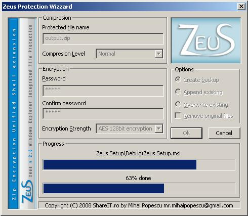

Using Zeus
The encryption and decryption is realised through a contextual menu (right click on file/folder),
through two commands: “Protect” and “Unprotect”. The command “Protect” appears in the menu only on the files/folders which are not already encrypted and compressed,
and the command “Unprotect” appears only on the archive which is encrypted and compressed.
The main window

The main window is divided in 4 big functional groups:
- Compression
Is assured by ZIP with 6 levels of compression:
- Store
- Fastest
- Fast
- Normal
- Maximum
- Ultra
- Encryption
Is assured by AES in 3 modes:
- AES 128 bits
- AES 256 bits
- Random 128/256 for each folder
- Options
- Create Backup
Creates backup files.
- Append Existing
Add to the existing files or to the archive to protect if those/this one already exists.
- Overwrite Existing
It removes the existing files to create the new ones.
- Remove original
It removes the files which are protected or the archive which is going to be unprotect.
- Progress
It has two progress bars. The first one is to display the progress for the current file and the second one the general progress.
The protected files
A file is recognized as a protected one if it's a ZIP file which contains encrypted files/folders with AES and compressed (through any method admissible
by the ZIP format, in general Store or Deflate). The recognized files are displayed in Explorer with an overlapped icon in overlay mode over
the standard icon (a lock which appears in the bottom right corner of the original icon) because the protected file can have any extension.
At one time when a file it was encrypted and compressed with Zeus, his recognition for the overlaying of the specific icon it is made only through
the reading of the content and his identification as a ZIP file encrypted with Zeus.

The About window
This window is opened also from the contextual menu applied on files and displays generic information about the compression ratio and copyright information .
The compression ratio is defined as a division between the compressed files dimension and its size before the compression.
ZIP has a method that never expands the data as in case of LZW which can double or triple the file size in extreme cases.
Summary
The Zeus project is a free utilitarian, his purpose being to satisfy the needs of security and data compression for the final user.
Innovation of Zeus consists that the files are protected in a non-homogeneous way using an encryption method of a random strenght.
It were used the free and standardized libraries for compression and encryption to offer a free alternative to WinZip.
Zeus has a user friendly interface and is integrated in Windows Explorer.